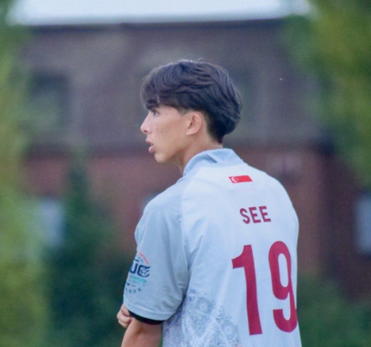
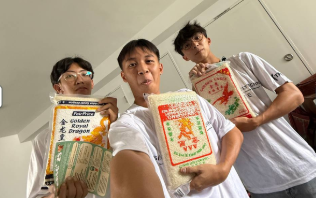

Hello, I am [See Yong Hong]
|
Who is [See Yong Hong]?
Hello, I Am [See Yong Hong]!
I'm a developer passionate about creating clean interfaces, solving problems through technology, and turning ideas into meaningful digital experiences. Beyond coding, I'm actively involved in Ultimate Frisbee, representing SP Ultimate and the National Youth Team Programme — some of which are experiences that have strengthened my teamwork, discipline, and drive to grow.

Beyond the Code: My Work & Passions

My Projects
Explore some of my practical works across Web Development, Full-Stack Applications and Data Analytics!
Explore projects
Technical skills
Just a few of the technologies I've worked and explored with!
View skillsSP Ultimate Frisbee
My growth with Singapore Polytechnic Ultimate Frisbee.
Explore sportsRepresenting Team Singapore
My International Competition Experience at U20 WJUC 2024 !
Explore sports Leadership
Leadership
Learning to Lead a team
Growing as a leader and serving as Vice-President of SP Ultimate.
Experience my leadership journey!
CommunityVolunteering
A few highlights from my volunteering experiences.
Explore my contributions!My Technical Educations
Childhood Robotics Lessons
Basic fundamental skills: Scratch, mBot, HTML, JavaScript, C#
Hover to learn more ←My Childhood Technology Experience
Developed strong programming logic and event-driven development skills through hands-on robotics projects with mBot. Built foundational coding knowledge using Scratch, then advanced to HTML and JavaScript for web development projects. Read More →
2015 – 2019
2019 – 2022
Secondary School Learning
Gained hands-on experience with object-oriented programming through tiny class projects.
Hover to learn more →My Secondary Experience
Was given the opportunity to explore Microbit through mini-class projects, and collaborate in a final project using the Microbit to develop a sustainability-focused solution.
Read More →Singapore Polytechnic Diploma
Specialised in Fullstack Development using HTML, JavaScript, and Java, with hands-on experience in database maanagement via MySQL and Prisma. Gained skills in UI/UX Design and developed a solid foundation in Networking Fundamentals.
Hover to learn more ←My Polytechnic Experience
Completed projects combining front-end and back-end development, implementing database management techniques, and designing intuitive user interfaces. Gained practical problem-solving experience through collaborative team projects, including the development of multi-page websites, RESTful APIs, and fullstack applications.
Read More →2023 – 2026
2023 – 2025
Data & Artificial Intelligence Certificate
Building responsive layouts, semantic HTML, and modern CSS animations.
Hover to learn more →My Certificate Experience
I was given the opportunity to work with real-world datasets, applying data transformation techniques using Power Query and Python libraries such as Pandas and NumPy. I also created interactive dashboards with Power BI and generated visualizations using Matplotlib. Gaining practical experience in data-driven decision-making.
Read More →Internship @ Synapxe
Worked on various projects involving data analysis and process automation for the Automated Identity Access Management Team @ Synapxe.
Hover to explore my internship journey ←Explore My Internship Journey
During my internship with Synapxe's Automated Identity Access Management team, I leveraged data analytics.
Open internship page →2025 – 2026

" From my first robotics lessons to full-stack projects and process automation, each step has shaped my curiosity and drive to keep learning. "